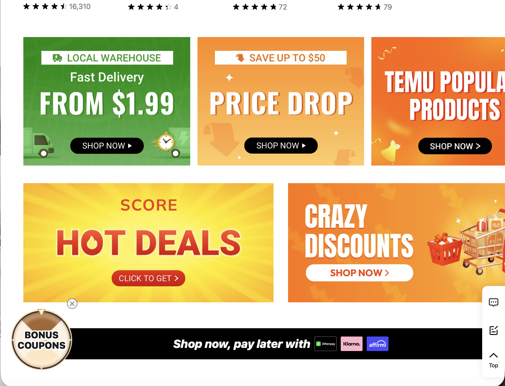
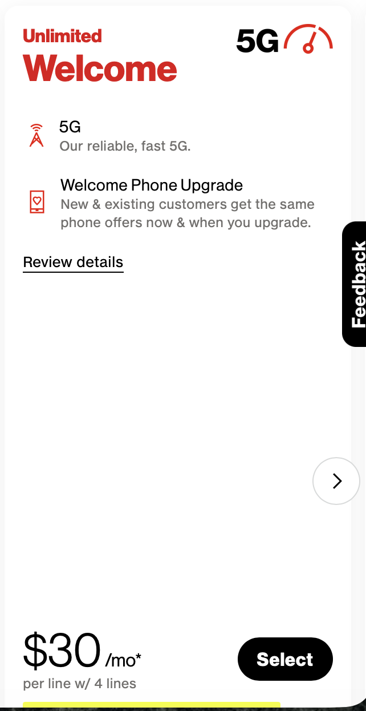

Exposing deceptive practices in user experience
I got this email from "Lidl France" that uses a copied logo and urgent messaging to deceive users:
This is a textbook example of a dark pattern: brand impersonation. It relies on users recognizing the brand’s logo, creates urgency with phrases like “limited offer,” and promises a reward to pressure users into acting quickly without questioning authenticity.
E-commerce platforms often push users into making impulsive purchases by creating a false sense of urgency or scarcity. Messages like “HOT DEALS,” “LIMITED TIME,” and “PRICE DROP” manipulate shoppers into believing they must act immediately or miss out.
This strategy overrides rational decision-making by tapping into fear of missing out (FOMO). In reality, these “special offers” are often recycled and not as limited as they appear.
Many telecom companies advertise low prices with small print conditions. In this example, the bold $30/mo price looks like a flat rate, but a tiny asterisk reveals it only applies if you purchase four lines together.
This is a hidden costs dark pattern. The design emphasizes the attractive low price while burying the real conditions in fine print. It misleads customers into thinking they are getting a cheaper deal than they actually are.